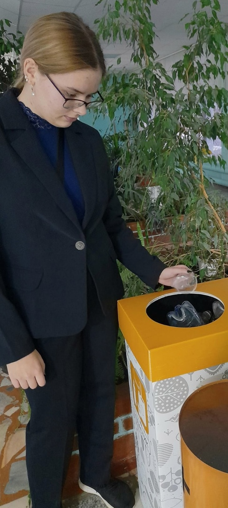
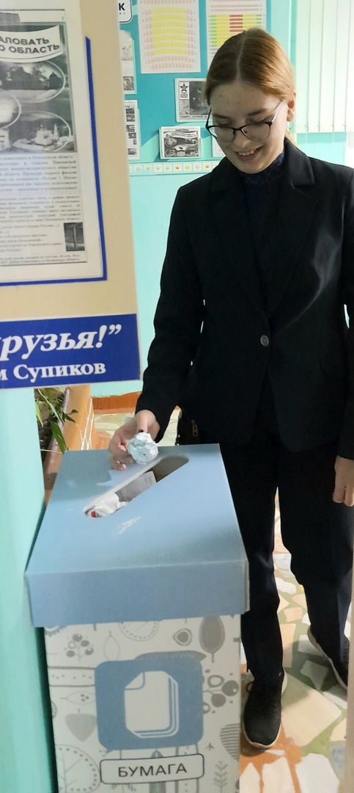
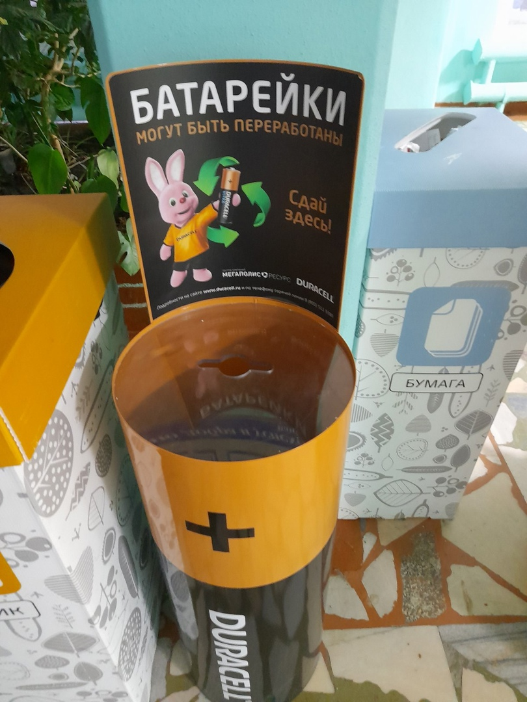
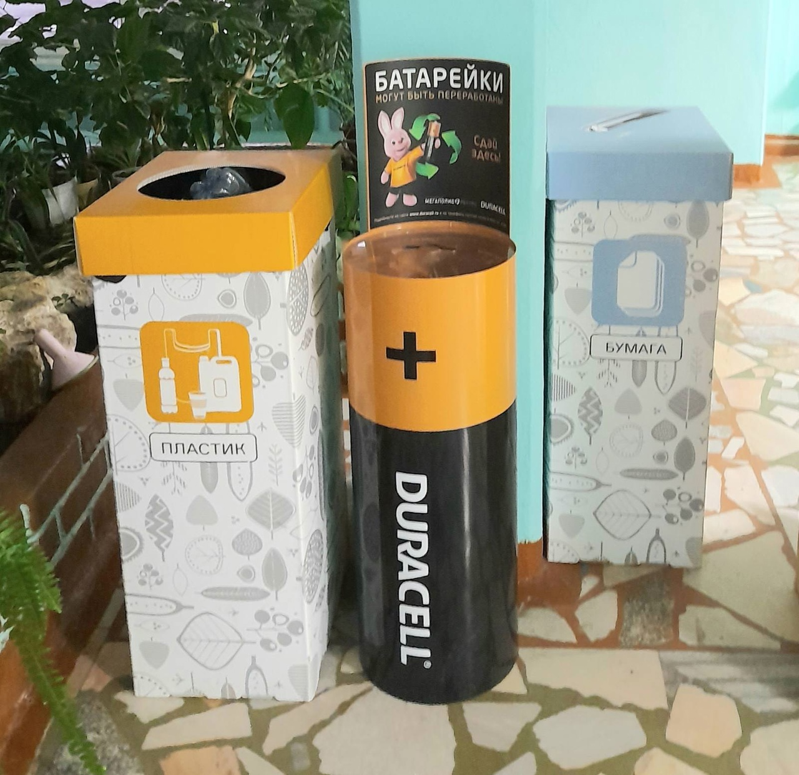

Сайт предоставляет общую информацию о российских лесах (в том числе о площадях лесов и их распределении по группам, официальные показатели лесопользования и лесовосстановления, платежи за пользование лесным фондом). Также представлены экологические новости, правовые документы российского лесного законодательства, информация об интернет-конференциях и семинарах, экологических проектах и кампаниях. При поддержке сайта выходит информационное издание «Лесной бюллетень», номера бюллетеня доступны в электронном виде. Работает английская версия сайта.
GREENWAVES.В российской версии международного портала по экологии и окружающей среде представлены сайты экологического образования и каталог ссылок на государственные и общественные учреждения, компании и предприятия, работающие в области экологии, ассоциации по экологии и окружающей среде, политически активные экологические партии. Предоставляется экологическая информация: литература, газеты, публикации на русском (временно не работает) и немецком языках. Форум находится в стадии разработки.
Вся экологияЭкопортал работает в рамках Северо-Западной региональной целевой координационно-экологической программы «Аварийный ресурс». Представлены новости экологии, пресс-релизы, каталог организаций, экологические ссылки, календарь событий, статьи, книги, рефераты, законы и документы. Имеется экологический словарь. Можно подписаться на электронные рассылки.
Представляете, сколько несортированного мусора собирается в день в доме, районе, городе или мире?
Некоторый мусор разлагается фантастически долго:
В России ежегодно выбрасывается около 60 миллионов тонн мусора. Все это копится на свалках десятилетиями и загрязняет нашу планету. Но выход есть... Сортировка бытовых отходов должна стала неотъемлемой частью жизни человека, который заботится о состоянии окружающей среды. С чего начать?
 В последние годы становится все больше пунктов приема подобных отходов. Батарейки и лампы принимают практически в любом строительном гипермаркете, и не только, даже в нашей школе стоит контейнер для их сбора.
 Текстиль и одежду можно сдать в некоторых магазинах одежды, взамен вам могут подарить купон на скидку.
А всего несколько простых правил помогут в несколько раз сократить количество мусора.
Я посчитала количество походов магазин, во время которых моя семья не использовала пластиковые пакеты. Какай маленький шаг для сохранения устойчивой экосистемы. Согласитесь, что каждому из нас не составит труда это сделать.